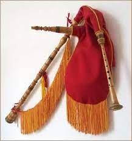
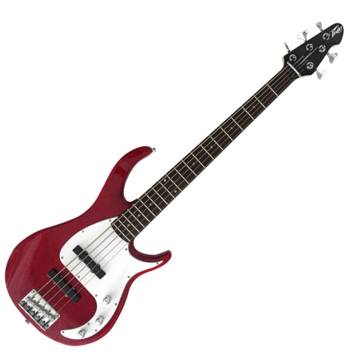

| Instrumentos |
|---|
1. Guitarra 
|
2. Tambor
|
3. Flauta
|
4. Piano
|
| Instrumento |
|---|
5. Bateria
|
| 6. Guacharaca |
| 7. Gaita  |
| 8. Gaita Colombiana |
| Instrumento |
|---|
| 9. Bandola |
10. Acordeón
|
| 11. Xilofono |
12. Trompeta
|
| Instrumento |
|---|
| 13. Arpa |
| 14. Tuba |
15. Triángulo
|
| 16. Bajo  |